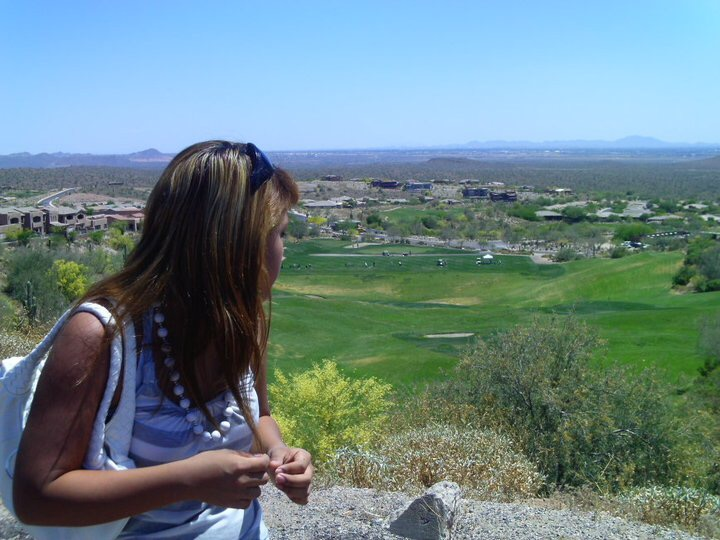

by Carmen Jimenez on 11/1/2016

Golf Courses Need to Go Green
For many water utilities, golf courses are their customers with highest usage and use the greatest quantity of water during the seasonal peak when utilities are struggling to meet water demands. As a major sport in Arizona, golf contributes at least $1 billion to the economy annually. At the same time, it uses roughly 4.5 percent of the state's ground water per year. But despite the considerable amount of money that the golf industry may generate, it should be at the front of the line when it comes to water cut-backs.
According to the Alliance for Water Energy, turf grass requires approximately 25 to 60 inches of water per year. Unlike other plants and trees, shallow turf grass does not maintain water reserves; however, deep-rooted turf grass utilizes less water than shallow-rooted turf grass. In order to maintain a healthy appearance, turf grasses require significant amounts of water, especially in the summer months. During the summer months, an average golf course uses 100,000 to 1,000,000 gallons of water per week to maintain the turf grass. On the other hand, the utilization of soil moisture monitors, an instrument used by many farmers to control the water contained in the pore spaces in the unsaturated zone of the grass, allows golf course management to monitor and irrigate when needed; irrigation is most efficient in the late evening and early morning hours. (Source: Golf Course Water Efficiency Introduction)
Golf course managers can reduce water consumption by limiting irrigation to critical playing areas and monitoring daily and monthly water usage. Additionally, an inspection of irrigation equipment for water leaks aids in water usage reduction. Also, many golf courses include shower facilities for players. Although federal requirements limit the shower head flow rate to 2.5 gallons per minute, some golf course shower heads exceed this limitation. To conserve water, golf course managers may utilize energy-efficient shower heads that restrict water flow. While redesigned shower heads may be more expensive, the reduced water costs produce greater overall savings.
Golf Course in Fountain Hills, AZ